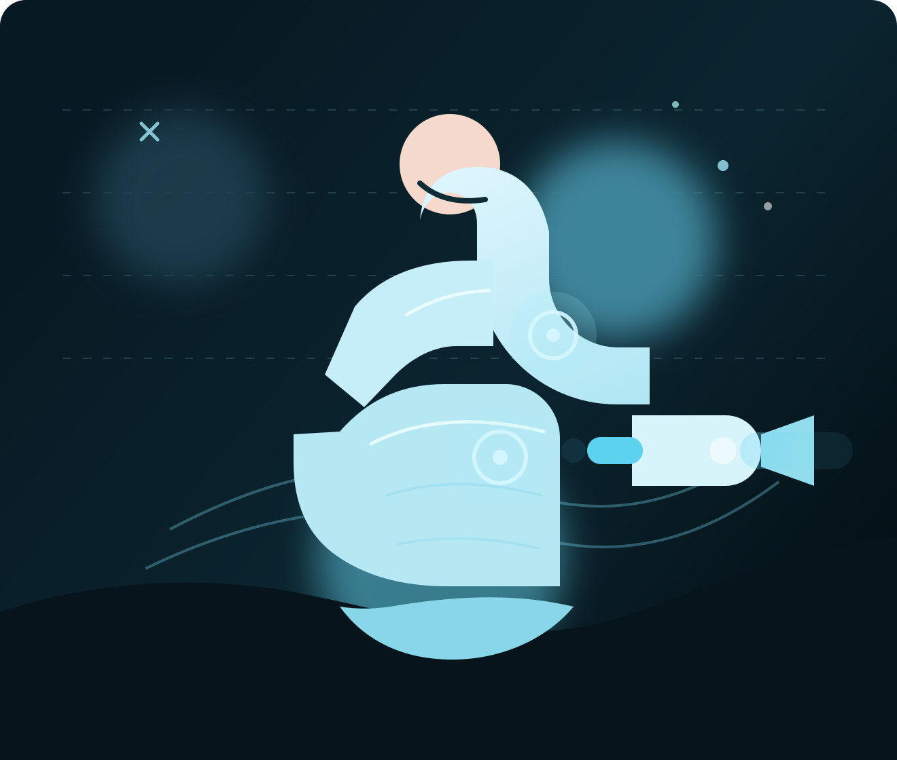
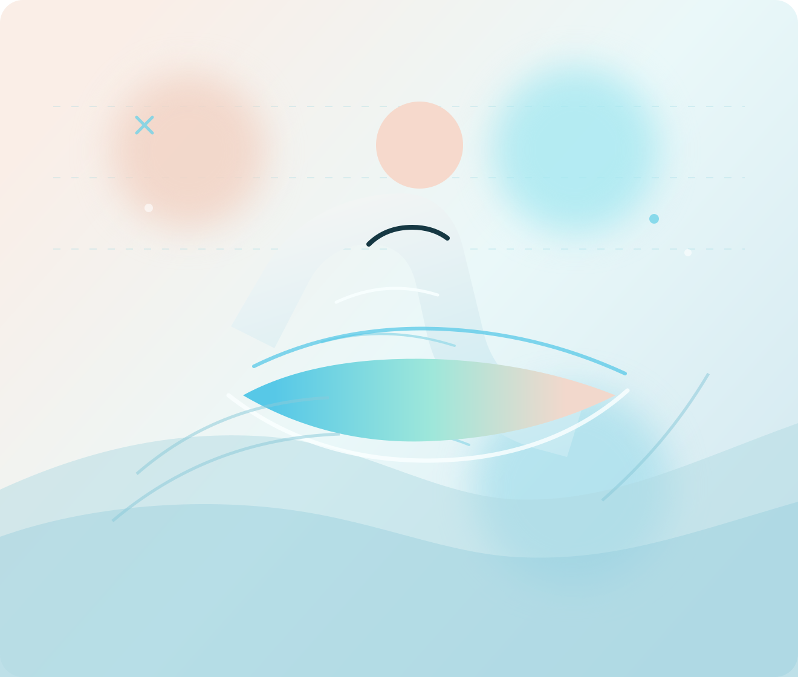

Concierge convenience
In-home recovery, ranch visits, gym pop-ins, hotel stays, and private event setups.
Mobile cryotherapy, reimagined
Inspired by the energy of performance brands, this version of Mobile Cryo Pro leans premium, visual, and on-location: localized recovery, body contouring, and glow-focused cryofacials delivered to homes, ranches, studios, and event weekends across the North Bay.
Recovery focus
Shoulders, knees, back, hips, and post-training resetAesthetic focus
Contour sessions, skin tightening, and event-week glowLuxury service energy without the clinic vibe.
Recovery for athletes, active families, and long workdays.
Camera-ready cryofacials and polished on-site hospitality.
Why this direction works
Instead of copying another site 1:1, this design keeps the same image-forward confidence and bold pacing, then shifts the details toward Mobile Cryo Pro’s world: clean editorial typography, icy gradients, champagne warmth, and visuals that feel at home in wine country, private training spaces, and event-driven wellness.
In-home recovery, ranch visits, gym pop-ins, hotel stays, and private event setups.
The service mix works for soreness, inflammation, sculpting, tightening, and fast facial refreshes.
Large visuals, stacked cards, and dramatic spacing make the brand feel bigger than a standard service site.
Signature services
Each card is set up like a campaign panel so the site can carry the same high-design feel even before professional photography is added.

Pain relief + recovery
Great for shoulders, knees, back tension, hips, elbows, feet, and anywhere you need a fast cold reset.

Contour + tightening
A premium positioning for waist, thighs, stomach, arms, and other high-interest areas where clients want a more polished, lifted look.
Cryofacial + glow
Use this service to anchor wedding-week bookings, hosting weekends, photoshoots, or travel recovery when clients want to look fresh without downtime.
Where this site wins
The imagery is used like a lifestyle brand would use it: big, immersive, and placed between content moments so the page never collapses into generic service blocks.
Use cases
This gives Mobile Cryo Pro room to sell both everyday appointments and bigger-ticket wellness activations without changing the visual language.

How it works
Recovery, body contouring, skin tightening, or a cryofacial glow session.
Home, gym, office, ranch, hotel, private event, or concierge property.
Clean on-site staging, fast treatment windows, and a polished guest experience.
Single-session relief or a package cadence for ongoing results and event prep.
Service area
The current structure gives the brand a strong regional identity while still feeling capable of concierge travel for the right booking.
Ready to launch
I used original artwork and a fresh layout system, so the site keeps the same bold, image-led energy without turning into a clone. If you want, the next pass can swap in real photography, booking integrations, or additional pages.